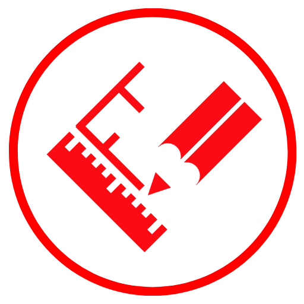

LEISTUNGEN
Die Werbeagentur „MATADOR“ bietet ein umfassendes Leistungsspektrum für Außen- und Innenwerbung. Der gesamte Prozess der Werbung für Ihr Produkt und/oder Ihre Dienstleistung kann in mehrere Phasen unterteilt werden.
Im ersten Schritt steht Ihre Idee zur Umsetzung eines Werbeprojektes. Es ist für beide Seiten sehr wichtig, alle Vertragsbedingungen kennenzulernen und mit Ihnen zu besprechen. In dieser Phase machen wir uns mit Ihren Vorstellungen, Wünschen und Empfehlungen rund um das Thema Werbung und deren Art vertraut. Wir beraten Sie, wie Sie Ihr Unternehmen mit Werbung unterstützen können.
Wir wissen, wie man Werbung richtig organisiert!
 Der nächste, wichtige Schritt bei der Umsetzung Ihrer Idee ist Design und Engineering.
Die Gestaltung einer Werbestruktur beliebiger Komplexität ist der Prozess der Entwicklung und Umsetzung einer Werbeidee in eine bestimmte, möglichst wirkungsvolle visuelle Form durch Auswahl und Anordnung verschiedener Werbeelemente.
Unsere Bauplaner erstellen visuelle Modelle von Gebäuden und Flugzeugen, auf denen ein visualisiertes Modell des Werbebauwerks visuell platziert wird. Wir erklären alle Feinheiten der Wahrnehmung von Außen- und Innenwerbung, bieten interessante Lösungen und berücksichtigen die Wünsche des Kunden. Alle wichtigen Punkte werden berücksichtigt; überlassen Sie diese Aufgaben den Profis.
Bei der Erstellung eines Designprojekts für Außenwerbung berücksichtigen wir auch die Anforderungen der Regulierungsbehörden, da die Werbestruktur die architektonische Komposition des Gebäudes nicht verletzen, sondern ergänzen soll.
Zusatzleistungen:
- Logoentwicklung;
- Design und Engineering von Außen- und Innenwerbung;
- Auswahl von Unternehmensfarben;
- Auswahl an Schriftarten;
- Wahrung der Corporate Identity.
Wir entwickeln ein Design und Projekt für jedes Werbeprodukt!
Der dritte Schritt ist die Vorbereitung der Genehmigungen.
Gemäß dem Verfahren der „Standardregeln für die Anbringung von Werbung in Kiew“ ist die Grundlage für die Anbringung eines Schildes oder einer Werbetafel in Kiew die „Genehmigung zur Anbringung eines Werbeschildes (Halterung, Schrank, Schild usw.)“ oder „Reisepass für die Anbringung“. ein Hinweisschild“ Ohne Dokumente angebrachte Schilder oder Werbetafeln sind illegal angebracht und müssen demontiert werden.
*Für interne Werbe- und Hinweisschilder mit einer Fläche von bis zu 1 qm sind keine Genehmigungen erforderlich.
Was wir Ihnen anbieten können:
- Entwicklung technischer Dokumentationen (Designs) für Werbemittel mit Siegeln eines lizenzierten Designers;
- Überprüfung und Bearbeitung fertiger Strukturen;
- Entwicklung von Skizzen komplexer Schilder, Fassaden, Dachkonstruktionen;
- Entwicklung von Projekten für Dachkonstruktionen, Gestelle, Paneele usw.;
- Berechnung der Stärke der Werbestruktur und Berechnung von Windlasten;
- Vorbereitung eines vollständigen Dokumentenpakets zur Erlangung der Genehmigung zur Installation von Außenwerbung;
- Entwicklung von Layoutdiagrammen für Strukturelemente;
- Einholung von Genehmigungen für Ihre Werbung bei allen erforderlichen Behörden.
Wir erteilen die erforderlichen Genehmigungen für verschiedene Werbestrukturen in Kiew und anderen Regionen der Ukraine!
Der vierte Schritt ist die Produktion und Installation von Innen- und Außenwerbung. Seine Wartung, Demontage und Entsorgung.
Unsere Praxis verfügt über Erfahrung in der Herstellung und Montage folgender Werbeträger:
- Werbekonstruktionen auf den Dächern der Stadt Kiew und in anderen Regionen;
- Werbung in Form eines Leuchtkastens;
- Werbemittel in Form von volumetrischen Leuchtbuchstaben;
- Banner und Bannergitter;
- Werbetafeln;
- doppelseitige Schilder;
- Neonwerbung;
- Werbeschilder an den Wänden großer Einkaufszentren in Kiew;
- Stelen und Schilder für Einkaufszentren;
- einseitig unbeleuchtete Schilder;
- Säulen für kleine Unternehmen;
- alle Arten von Werbeschildern für den Innen- und Außenbereich;
- und vieles mehr.
Wir installieren alle Außenwerbeanlagen in Kiew und anderen Regionen der Ukraine nur unter der Aufsicht qualifizierter Fachkräfte. Das Vorhandensein spezieller Ausrüstung, Genehmigungen und Genehmigungen für Höhen- und technische Arbeiten ermöglicht es uns, Ihnen eine hohe Qualität und Zuverlässigkeit des Produkts zu garantieren.
Was den Abbau und die Entsorgung angeht: „Brechen ist kein Bauen!“ Wir produzieren es schnell und ohne Beschädigung des Äußeren.